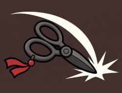
ストライク
6（強化 9）ダメージを与える。
Slay the Spire 2 MOD v0.0.1・全48枚・2026-11-26 更新

6（強化 9）ダメージを与える。
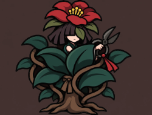
5（強化 8）ブロックを得る。

5（強化 8）ブロックを得る。
苗床：椿

開花中のみ使える。
8（強化 11）ダメージを与える。
花びら+1。
9（強化 12）ダメージを与える。

3（強化 4）ダメージを3回与える。

敵全体に8（強化 11）ダメージを与える。
花びらを1枚散らす。
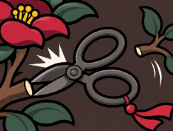
7（強化 9）ダメージを与える。
脱力1（強化 2）を付与する。
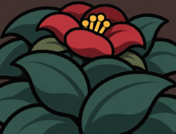
7（強化 10）ブロックを得る。
蕾：さらに3ブロックを得る。

開花：花びら+1。
蕾：蕾の残りを1減らす。
カードを1（強化 2）枚引く。

敵全体に脱力1（強化 2）を付与する。
蕾：さらに弱体1（強化 2）を付与する。

6（強化 8）ブロックを得る。
次のターン開始時に4（強化 6）ブロックを得る。

6（強化 9）ダメージを与える。
苗床：茨
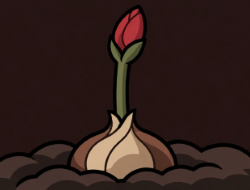
脱力1（強化 2）を付与する。
苗床：彼岸花
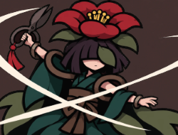
開花中のみ使える。
4（強化 5）ダメージを2回与える。
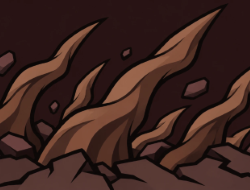
敵全体に5（強化 7）ダメージを2回与える。
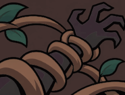
6（強化 8）ダメージを与える。
このターン、この敵の筋力を3（強化 4）下げる。
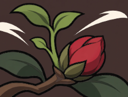
蕾中のみ使える。
蕾の残りを1減らす。
カードを2（強化 3）枚引く。

開花：花びら+2（強化 3）。
それ以外：すぐに花びら3（強化 4）枚で開花する。

カードを1（強化 2）枚引く。
苗床：藪椿
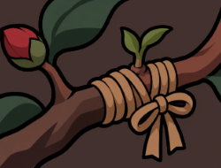
開花：花びら+2（強化 3）。
蕾：蕾の残りを1減らす。
苗床：山茶花
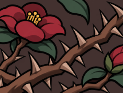
6（強化 8）ブロックを得る。
次のターンまで、攻撃してきた敵に3（強化 5）ダメージを与える。

蕾の間も、アタックのダメージが2増える。
落椿のたび、次のターンにカードを2（強化 3）枚多く引く。
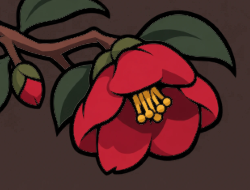
落椿のたび、敵全体に8（強化 11）ダメージを与える。
20（強化 26）ダメージを与える。
これで敵を倒したら、花びら+3。
2（強化 3）ダメージを（X×3）回与える。
開花中のみ使える。
落椿を起こし、敵全体に「残りの花びら×4（強化 5）」ダメージを与える。
開花中のみ使える。
花びらを1枚散らす。
1エナジーを得る。カードを1（強化 2）枚引く。
次の落椿のあと、蕾にならずに、花びら5枚ですぐに開花する。
廃棄。
苗床：千年椿
廃棄。
開花中のみ使える。
20（強化 26）ブロックを得て、落椿を起こす。
ターン終了時に、花びらが散らなくなる。
開花のアタックのダメージ増加が、さらに2増える。
落椿のたび、次のターンに1エナジーを得て、カードを2（強化 3）枚多く引く。
5ブロックを得る。
7ブロックを得る。
蕾なら、花びら5枚で開花する。
5ダメージを与える。
敵全体に6ダメージを与える。
カードを1枚引く。
1エナジーを得る。
敵全体に7ダメージを与える。
敵全体に15ダメージを与える。
花びら5枚で開花する（開花中なら花びら+5）。
脱力1を付与する。
敵全体に脱力1と弱体1を付与する。
開花：花びら+1。
蕾：蕾の残りを1減らす。
開花：花びら+3。
それ以外：すぐに花びら3枚で開花する。
使えない。
絵が見つからないカード：根こそぎ、千本蔓、落椿、花散らし、返り咲き、千年の種、花冷え、八重咲き、紅椿、散り際、椿（芽）、椿（花）、茨（芽）、茨（花）、藪椿（芽）、藪椿（花）、千年椿（芽）、千年椿（花）、彼岸花（芽）、彼岸花（花）、山茶花（芽）、山茶花（花）、朽ち花